Sherlock Holmes Museum for junior classes
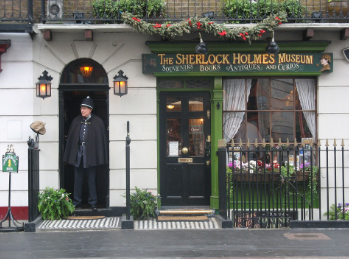
The Sherlock Holmes Museum is a London home museum of the consulting detective Sherlock Holmes, a literary character created by Sir Arthur Conan Doyle.
The building
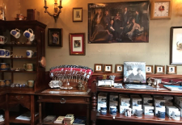
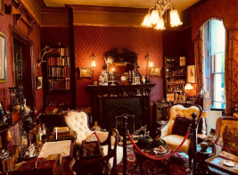
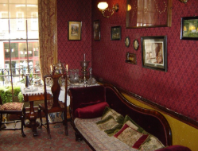
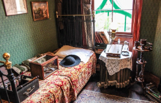
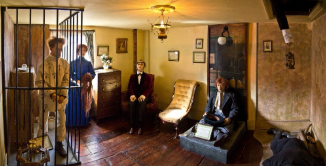
A four-storey Victorian house built in 1815. It is listed as a Grade II listed building of architectural and historical importance.
The house has a typical London memorial plaque ("blue plaque") on the outside, which mentions the consulting detective Sherlock Holmes and the years 1881-1904.
There is a souvenir shop and a small front hall on the ground floor.
On the second floor, there is a living room (facing Baker Street) and Holmes's adjacent room (facing the courtyard).
On the third floor, there are Watson's rooms (with a window facing the courtyard) and Mrs. Hudson's rooms (with a window facing the street).
The fourth floor, which was originally used for household purposes, features wax figures of characters from various Sherlock Holmes stories, as well as a toilet and a closet.
Sherlock Holmes Museum for senior classes
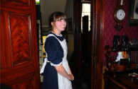
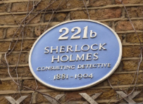
The Sherlock Holmes Museum has been in existence since 1990 and is a popular attraction in London, attracting fans of the famous detective from all over the world.
The Sherlock Holmes Museum is a London home museum of the consulting detective Sherlock Holmes, a literary character created by Sir Arthur Conan Doyle.
The museum is private and is managed by the International Sherlock Holmes Society. The tours are conducted by women dressed as maids and last from half an hour to 45 minutes, but visitors can stay longer at the exhibits they are interested in, take photos and videos, and purchase gifts such as magnets, postcards, books, smoking accessories, hats, and more at the gift shop. The building is adorned with a blue plaque, which is used in the United Kingdom to mark the homes of famous individuals. This blue plaque mentions the dates 1881-1904, according to the works of A. C. Doyle.
Decoration
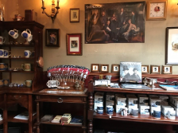
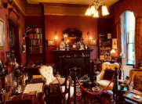
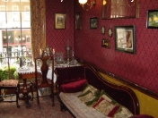
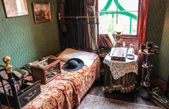
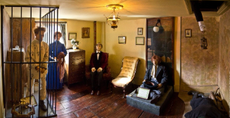
On n the ground floor, there is a gift shop and a small front hall.
On the second floor, there is a living room (facing Baker Street) and Holmes's adjacent room (facing the courtyard).
On the third floor, there are Watson's rooms (with a window facing the courtyard) and Mrs. Hudson's rooms (with a window facing the street).
The fourth floor, which was originally used for household purposes, features wax figures of characters from various Sherlock Holmes stories, as well as a toilet and a closet.